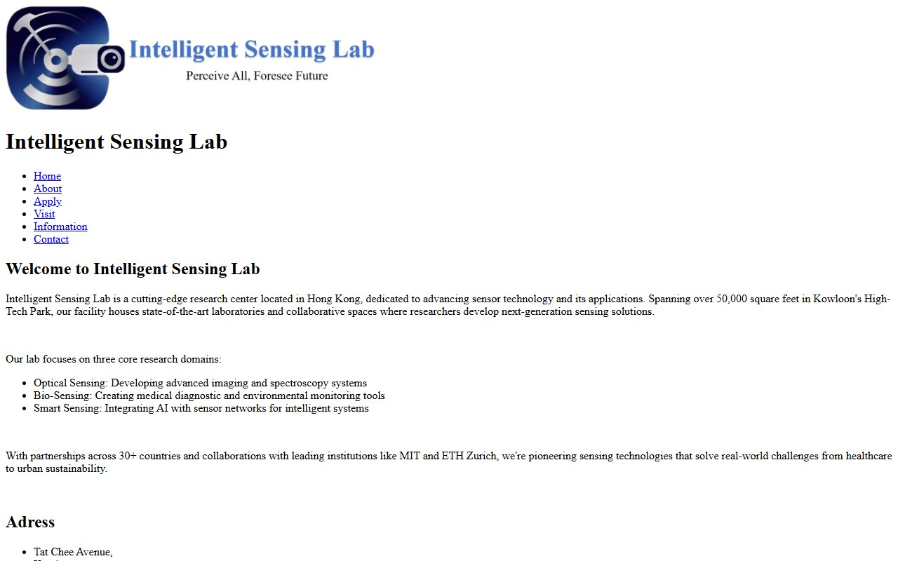
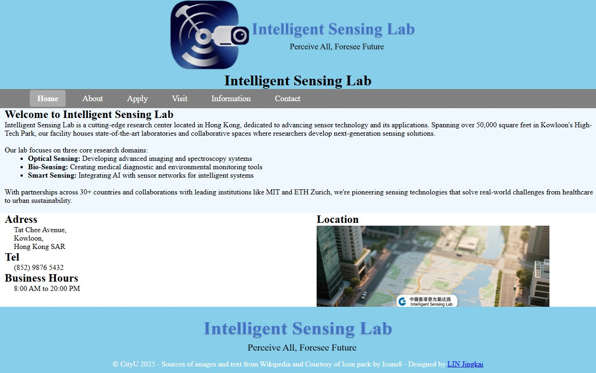
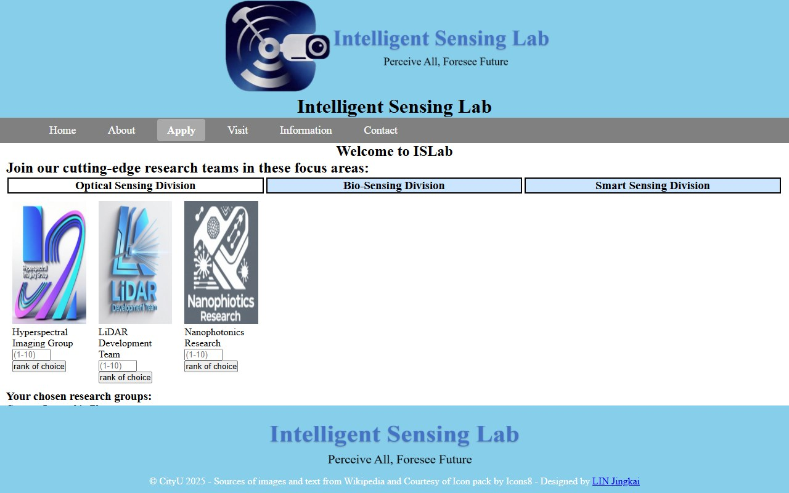
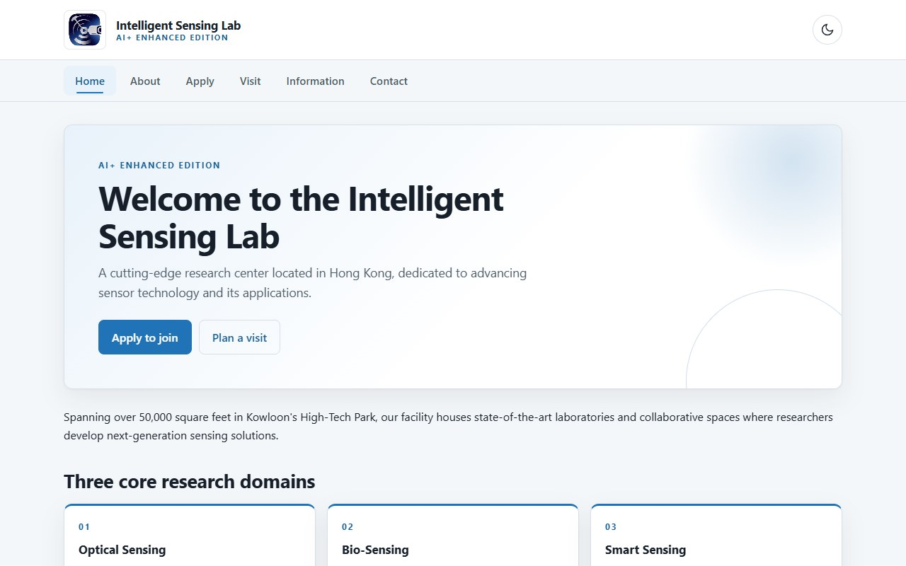

CS2204 Intelligent Sensing Lab Coursework
Three preserved coursework iterations for the Intelligent Sensing Lab website, plus an AI-enhanced single-page edition built from the final coursework assets.

CW1 Initial multi-page static website. HTML structure only, with no styling.
CW2 Revised structure with separated HTML and CSS, layout work and a print stylesheet.
CW3 Final coursework version. JavaScript adds form validation, booking and content switching.
AI+ Edition Single-page edition with tab navigation, client-side validation and a light or dark theme.